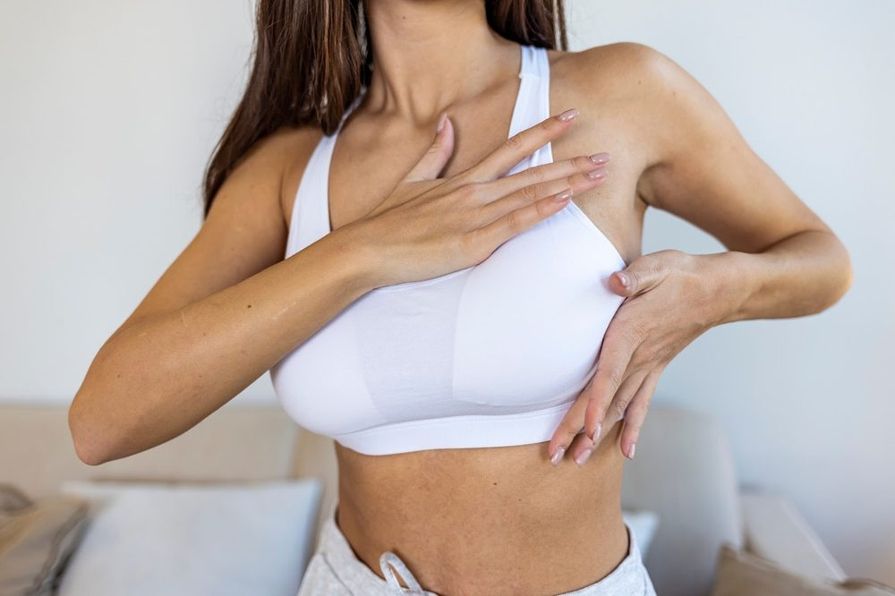
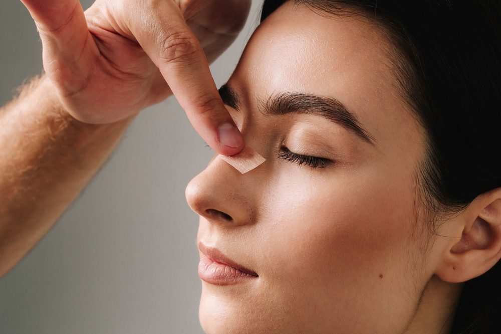
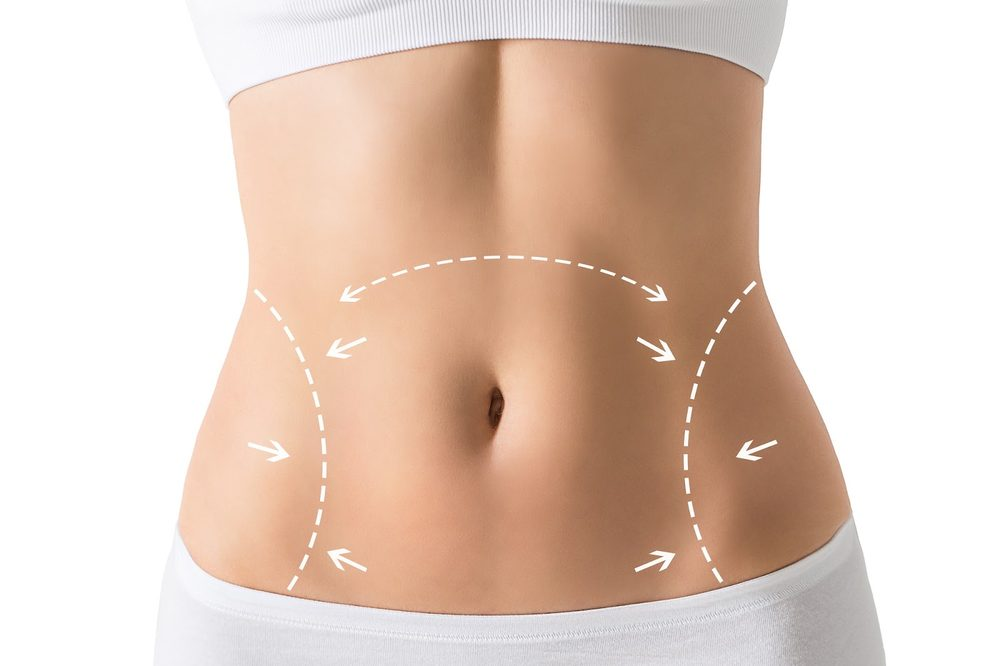
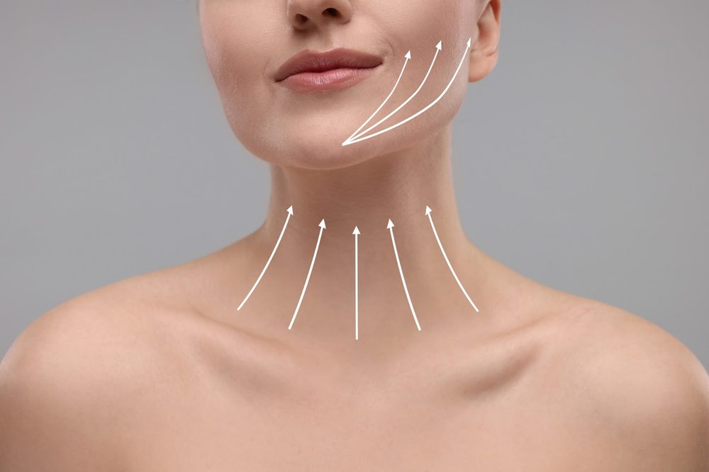
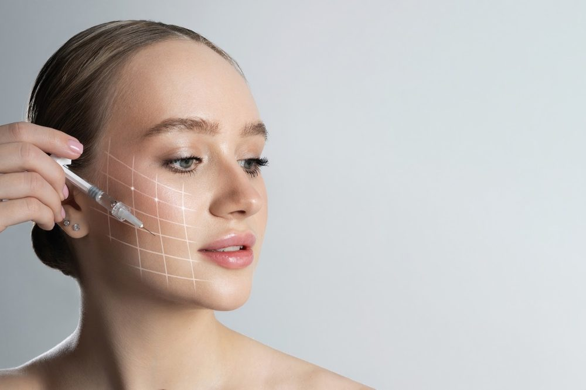

דוח התקדמות
האתר החדש של ד״ר ביאדר בלאל
סיכום העבודה שבוצעה עד כה: מחקר ואסטרטגיה, איסוף המדיה, מבנה האתר ועמוד הבית, והצעדים הבאים.
08/11/2026הוכן עבור: סיגל קדושBzik שיווק דיגיטלי
1תקציר
העבודה נעשתה בשני שלבים. קודם ביצענו מחקר ואסטרטגיה, ועל בסיסם בנינו את עמוד הבית של האתר החדש, שכבר עלה לצפייה. מבנה האתר כולו (5 קטגוריות טיפול ועמודי הטיפולים שתחתן) מוגדר ומחובר לעמוד הבית.
| שלב | מה כולל | סטטוס |
|---|
| מחקר מילות מפתח | 74 מילים ב-11 אשכולות | ✓ הושלם |
| מחקר מתחרים | 7 מתחרים | ✓ הושלם |
| מיפוי שירותים | תפריט טיפולים מאוחד ודוסייה על הרופא | ✓ הושלם |
| איסוף מדיה | 76 תמונות, סרטונים, לפני ואחרי, המלצות | ✓ הושלם |
| מבנה האתר | 5 קטגוריות טיפול ועמודי טיפול | ✓ הושלם |
| עמוד הבית | 11 סקשנים | ✓ הושלם |
| דיוק המותג | צבעים, לוגו, צורת כתיבה | בביצוע |
| עמודים פנימיים | טיפולים, אודות, לפני ואחרי, יצירת קשר | הבא בתור |
2מחקר ואסטרטגיה
כל ההחלטות באתר מבוססות על שלושה מחקרים שביצענו לפני בניית עמוד הבית, והם קבעו את המבנה, המסרים והעיצוב.
מחקר מילות מפתח מעמיק
74מילות מפתח
11אשכולות נושא
2,400חיפושים בחודש, בוטוקס
1,600חיפושים בחודש, הגדלת חזה
- ניתחנו 74 מילות מפתח מדוח הדירוגים של 12/10/2026 וחילקנו אותן ל-11 אשכולות נושא (חזה, בוטוקס, עפעפיים, אוזניים, גניקומסטיה, אף, בטן ועוד).
- נקודת הפתיחה: האתר הקיים לא מופיע בגוגל באף אחת מהמילים. האתר החדש נבנה מהיסוד כדי לשנות את זה.
- מילות העוגן עם הנפח הגבוה: בוטוקס (2,400 חיפושים בחודש), הגדלת חזה (1,600), גניקומסטיה (1,300), עיצוב אוזניים (1,300), שאיבת שומן (1,200), הקטנת חזה (1,100), ניתוח עפעפיים (1,100), הרמת חזה והרמת גבות (1,000 כל אחת).
- מיפינו כל מילה לעמוד באתר: עמוד מרכזי לכל נושא, והחיפושים הספציפיים יותר מטופלים בתוכו. כך עמודים של אותו אתר לא מתחרים זה בזה על אותה מילה.
מחקר מתחרים
- ניתחנו את 7 המתחרים שביקשת: ד״ר וינקלר, אמיר ענבל, אריאל טיסונה, יורם וולף, ניר אייל, גיא רסנר וחגית אופיר. בדקנו מבנה עמודים, עיצוב, תוכן, אותות אמון ודרכי פנייה.
- המתחרה האמיתי בגוגל הוא ד״ר טיסונה, ובמידה פחותה ד״ר אייל. אתר וינקלר שימש כדוגמה למבנה עמודים מלא.
- נקודות הבידול שזיהינו ויישמנו באתר: אף מתחרה לא משתמש בוידאו. רובם חלשים באותות אמון מקצועיים ובדרכי פנייה. לפני ואחרי הוא ציפייה בסיסית של מטופלים.
מיפוי שירותים
- איחדנו את רשימת הטיפולים מכל המקורות (הבריף שלך, האתר הקיים, פרופילים ברשת) לתפריט אחד מסודר לפי אזור טיפול.
- בנינו דוסייה מקצועי על הרופא: הסמכות, תת-התמחות, טון דיבור ומוניטין. זה מה שמזין את כל התכנים באתר.
3איסוף ואיגוד המדיה
כל המדיה שהגיעה ממך ומהאתר הקיים עברה מיון, עיבוד והתאמה לאתר, ורוכזה במקום אחד.
- 76 תמונות מהצילומים (מרפאה וחדר ניתוח) הורדו מהדרופבוקס, עברו הקטנה לאתר, ונבחרו מהן התמונות לעמוד הבית.
- סרטונים (חדר ניתוח, פילינג, שאיבת שומן) נערכו לשלושה קטעי וידאו שרצים ברקע של פתיח האתר, מותאמים לטעינה מהירה.
- תמונות לפני ואחרי של ניתוח אף (מבט חזית ומבט צד) יושרו אחת מול השנייה, כדי שההשוואה בסליידר תהיה מדויקת.
- תכנים מהאתר הקיים ומהבריף שלך שולבו ונכתבו מחדש בטון אחיד: חם, אישי ומרגיע.
- 6 המלצות אמיתיות מגוגל נאספו ונערכו קלות לאתר, עם שם המטופל וסוג הטיפול.
- הלוגו המקורי וקאבר הפייסבוק נאספו ונשמרו כבסיס להתאמת צבעי המותג.
4מבנה האתר: 5 קטגוריות טיפול
האתר מחולק ל-5 קטגוריות טיפול, ותחת כל קטגוריה יש עמוד נפרד לכל טיפול. בעמוד הבית, מעבר עם העכבר על קטגוריה פותח את רשימת הטיפולים שלה. המבנה מבוסס על מחקר מילות המפתח, כך שכל עמוד מכוון לחיפושים שלו בגוגל.

1. ניתוחי חזה
- הגדלת חזה
- הקטנת חזה
- הרמת חזה
- החלפת שתלים
- גניקומסטיה

2. ניתוחי אף
- ניתוח אף בגישה סגורה
- ניתוח אף בגישה פתוחה

3. עיצוב הגוף
- מתיחת בטן
- שאיבת שומן
- עיצוב זרועות
- עיצוב והרמת ישבן
- מתיחת ירכיים וליפטינג גוף היקפי
- מאמי מייקאובר
- פלג גוף עליון/תחתון
- הסרת עודפי עור לאחר הרזיה
- מתיחת בטן היקפית (Body Lift)

4. ניתוחי פנים וצוואר
- מתיחת פנים
- מתיחת פנים וצוואר
- הרמת מצח
- הרמת גבות
- עפעפיים עליונים / תחתונים
- הרמת סנטר
- הצמדת אוזניים

5. אסתטיקה (לא ניתוחית)
- בוטוקס אסתטי: מצח, גבות, צידי עיניים, אזורים נוספים
- בוטוקס רפואי: מיגרנות כרוניות, הזעת יתר, חריקת שיניים
5עמוד הבית: מה נבנה
עמוד הבית מושלם וכולל 11 סקשנים, בסדר שבו המבקר רואה אותם. הוא בנוי בעברית מימין לשמאל, מותאם למובייל, וכולל מצב תצוגה כהה.
- תפריט עליון קבוע: ניווט, טלפון לחיץ, כפתור וואטסאפ וכפתור "לתיאום ייעוץ".
- פתיח וידאו: שלושה סרטונים מהמרפאה ומחדר הניתוח, הכותרת "אסתטיקה טבעית, בראייה של כירורג", ציטוט הרופא ודירוג 5.0 מ-222 חוות דעת.
- רצועת יתרונות עם אייקונים: מומחה מוסמך (שיבא), מעל 12 שנות ניסיון, תת-התמחות קרניופציאלית, 3 שפות, פגישת ייעוץ מקוזזת.
- "למה מטופלים בוחרים בד״ר ביאדר": ארבעה כרטיסים עם תמונות: תוצאה טבעית, העין של כירורג גם בהזרקות, ייעוץ כן בלי לחץ, שורשים במצוינות.
- תחומי הטיפול: חמש תמונות קטגוריה שנפתחות במעבר עכבר ומציגות את רשימת הטיפולים.
- לפני ואחרי אינטראקטיבי: סליידר שגוררים באצבע או בעכבר כדי לראות את השינוי, במבט חזית ובמבט צד.
- המלצות: ציון 5.0 מ-222 ביקורות וקרוסלה עם 6 המלצות אמיתיות מגוגל.
- אודות הרופא: פורטרט, ציטוט חזון, הרקע המקצועי ותגיות הסמכה.
- סקשן וידאו: "להכיר את ד״ר ביאדר, בוידאו", עם קישור לערוץ היוטיוב.
- יצירת קשר: טלפון, וואטסאפ, כתובת המרפאה, רשתות חברתיות וטופס תיאום ייעוץ.
- פוטר: קישורים לכל תחומי הטיפול, ניווט, רשתות חברתיות והצהרת נגישות.
בנוסף, כפתור וואטסאפ צף מלווה את המבקר בכל העמוד, ובמובייל יש תפריט נפתח מלא.
6הצעדים הבאים
העבודה ממשיכה בשני שלבים, זה אחרי זה.
בביצוע עכשיו
דיוק המותג
- מעבר לצבעי המותג: אפרסק ופיסטוק
- שילוב הלוגו המקורי במדויק
- התאמת צורת הכתיבה, הטון והטיפוגרפיה
אחרי אישור השלב הראשון
עמודים פנימיים
- עמודי הקטגוריות ועמודי הטיפולים, עם תוכן ומדיה לכל טיפול
- עמוד אודות
- עמוד לפני ואחרי
- עמוד יצירת קשר
- עמודים נוספים לפי הצורך
מה נצטרך מכם
- קודי הצבע של האפרסק והפיסטוק, או דוגמה שבה הם מופיעים (הלוגו שקיבלנו בגוון זהב)
- קובץ לוגו וקטורי (AI, EPS, SVG או PDF) או PNG שקוף
- אישור מספר הטלפון לאתר (050-359-3642 או 055-4548616) והכתובת
- תמונות לפני ואחרי נוספות, שיש עליהן הסכמת מטופלים